News
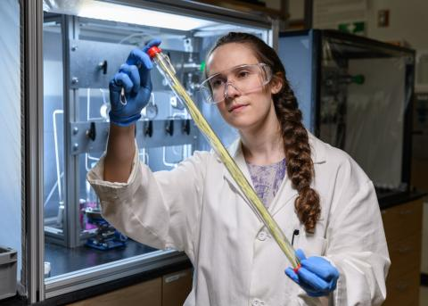
Georgia Tech helps advance the DOE Genesis Mission
Asif Khan will partner with Lawrence Livermore National Laboratory to accelerate the discovery of new ECRAM materials for energy-efficient AI systems.

Asif Khan joins Georgia Tech Emerging Leaders tour with President Angel Cabrera
The Emerging Leaders cohort joined the president's statewide tour through Macon and Milledgeville.
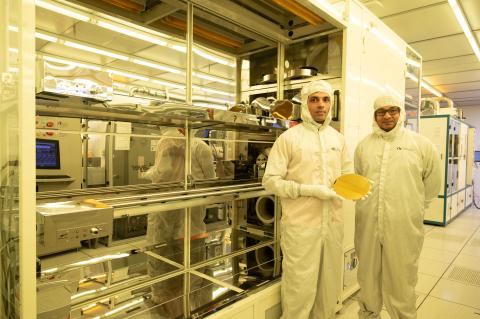
Tech Briefs covers Khan Lab's radiation-tolerant NAND memory
The article highlights ferroelectric NAND flash that can withstand radiation levels far beyond conventional flash memory.
Georgia Tech researchers discover new NAND flash storage for deep-space missions
Lance Fernandes and Asif Khan built ferroelectric NAND chips that showed strong radiation resilience for space applications.
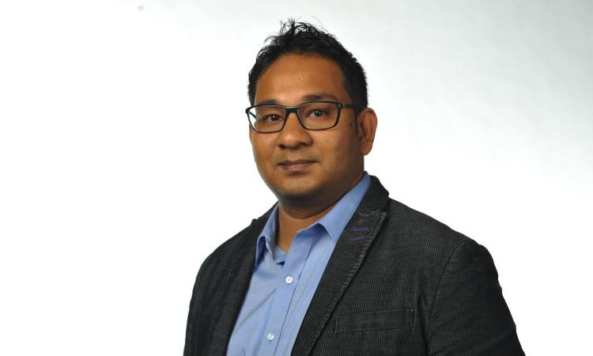
ECE News: Khan named Editor-in-Chief of JxCDC
As a recognized expert in emerging semiconductor and next-generation computing technologies, Khan will lead the IEEE Journal on Exploratory Solid-State Computational Devices and Circuits.
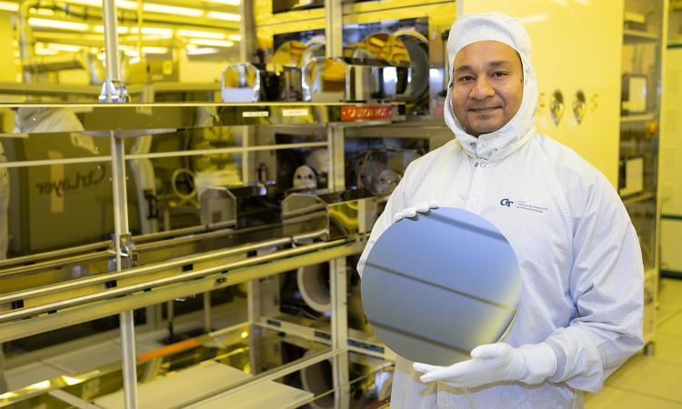
College of Engineering features Khan Lab in next-generation computing story
The feature examines advanced memory, stacked computing, and the future of microelectronics at Georgia Tech.
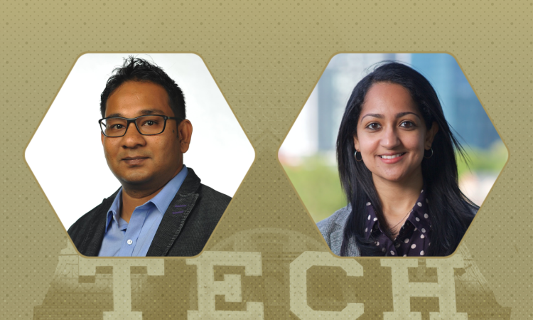
Asif Khan selected for the EU-US Frontiers of Engineering Symposium
The National Academy of Engineering-affiliated symposium brings together early-career researchers from the United States and Europe.
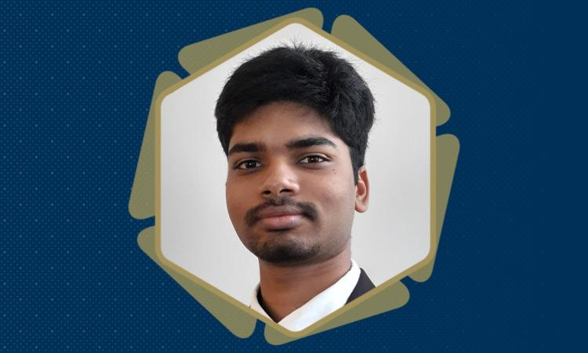
Prasanna Venkatesan wins Best Paper at IEEE IRPS 2025
The award recognizes work on robust 10-year retention in ferroelectric NAND applications.
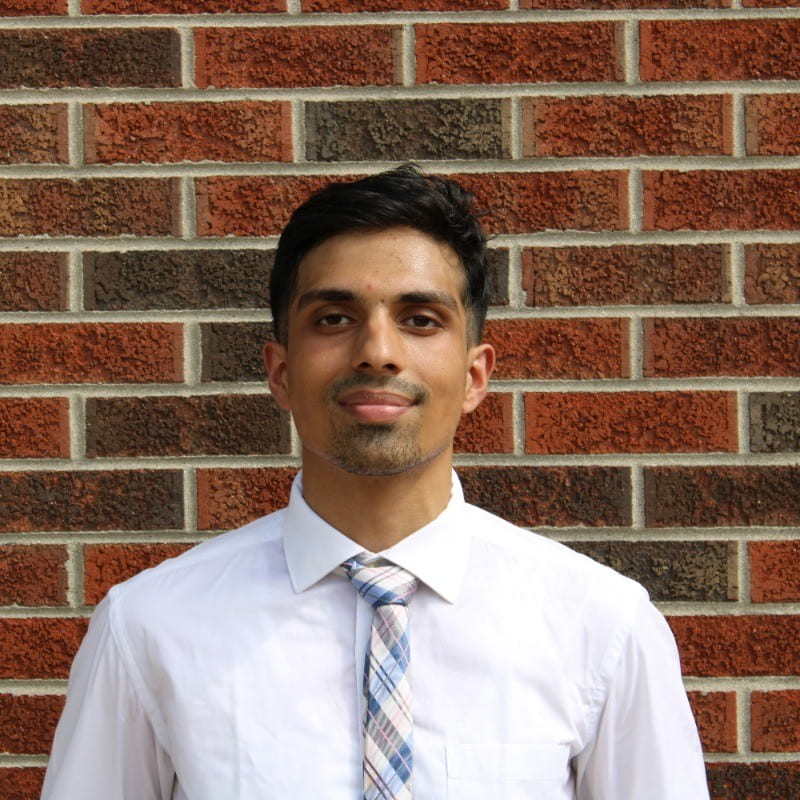
Lance Fernandes awarded IEEE Electron Devices Society Masters Student Fellowship
The fellowship supports his work on integrating ferroelectric materials into 3D NAND flash technology.
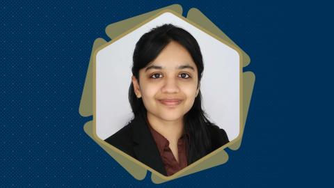
Priyankka Ravikumar wins Best Paper Award at IIRW 2024
Her work on the first switch effect clarifies reliability challenges in ferroelectric field-effect transistors.
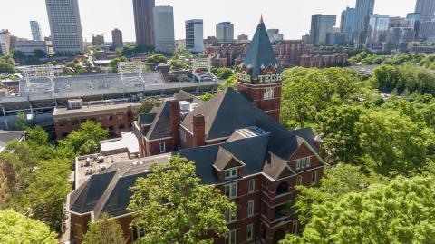
Asif Khan selected for Georgia Tech's Emerging Leaders Program
The 2024-25 cohort brings together faculty and research leaders from across the Institute.
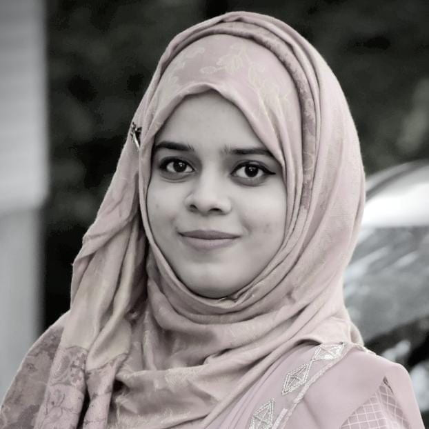
Nashrah Afroze wins Best Presentation at JUMP 2.0 SUPREME Annual Review
Her work focuses on interface engineering for high-performance memories at elevated temperatures.

Nujhat Tasneem wins IEEE SISC Best Student Paper Award
The award recognized her work on charge-trapping effects in ferroelectric field-effect transistors.

Georgia Tech President Angel Cabrera visits Khan Lab
The visit focused on ferroelectricity, negative capacitance, and Khan Lab's microelectronics research.
Asif Khan chosen for DARPA Young Faculty Award
The award supported research on ferroelectric field-effect transistors for embedded nonvolatile memory.
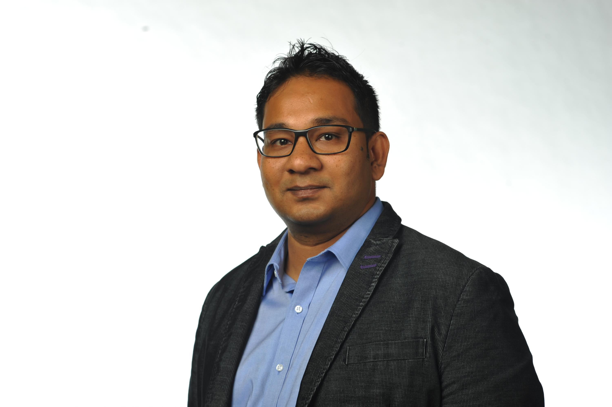
Asif Khan wins NSF CAREER Award
The project explores antiferroelectric negative-capacitance transistors for ultra-low-power computing.